Cada proyecto definido de verdad (misión, alcance, versiones, difusión sin costo y sin cara, roadmap, nombres y caso de negocio a 5 años), lo que funciona hoy y conviene copiar o fusionar, un campo nuevo (Municipio y Estado), patentes y marcas, el plan mes a mes y un backlog de 38 ideas en su versión viable.
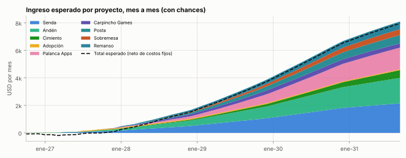
Uso privado. Todas las cifras son estimaciones con fuentes fechadas; no es asesoramiento financiero ni legal.
Se generan desde el repositorio (oportunidades/proyectos/, herramientas/holding.py) y se pueden recalcular.
Palanca (nombre recomendado del holding) · Construir con IA una cartera de productos digitales y activos que generen dólares sin salir a vender, reinvertir lo que dejan y componer durante años.
USD por mes, promedio de cada año. «Esperado» cuenta las chances de que funcione o no; «si funciona» es su escenario normal.
| Proyecto | Arranca | h/sem 2027 | Inversión USD | Chances | Esperado 2027 | 2028 | 2030 | Si funciona 2030 |
|---|---|---|---|---|---|---|---|---|
| Senda Suite cristiana · motor 1 | oct-26 | 3,1 | 150 | 30% | 68 | 340 | 1.474 | 4.688 |
| Andén Logistic Lab · motor 2 | dic-26 | 3,0 | 150 | 25% | 21 | 263 | 1.212 | 3.776 |
| Cimiento Renta en dólares · base | oct-26 | 0,3 | 0 | 85% | 16 | 39 | 268 | 207 |
| Adopción Comprar una app que ya factura · base | mar-27 | 0,7 | 2.000 | 65% | 30 | 65 | 64 | 110 |
| Palanca Apps Fábrica de réplicas · fábrica | may-27 | 0,7 | 100 | 85% | −7 | 91 | 980 | 1.097 |
| Carpincho Games Juegos web en portales · tiros de juegos | ago-27 | 0,2 | 50 | 57% | 3 | 86 | 313 | 473 |
| Posta Alquileres con aviso anticipado · tercer motor (2028) | may-27 | 0,5 | 150 | 12% | −10 | 50 | 406 | 3.329 |
| Sobremesa Música funcional con IA · línea de música | sep-27 | 0,2 | 50 | 12% | −14 | — | 269 | 1.881 |
| Remanso Música instrumental con IA · línea de música | mar-27 | 0,5 | 30 | 15% | −16 | 86 | 400 | 2.207 |
| Costos fijos del holding (Claude, empresa, herramientas) | −155 | −151 | −138 | |||||
| Total esperado del holding | −64 | 870 | 5.248 | |||||
| # | Idea | Desde | Con |
|---|---|---|---|
| 1 | Plantillas para iglesias | sep-28 | Senda |
| 2 | Libros de nicho en Amazon | nov-28 | Proyecto propio |
| 3 | Ofertas reales (comparador + afiliados) | mar-29 | Proyecto propio |
| 4 | Simuladores de exámenes | jun-29 | Palanca Apps |
| 5 | Extensión para vendedores de Mercado Libre | sep-29 | Andén |
| 6 | Academia para estudiantes | ene-30 | Andén |
| 7 | Prode del Mundial 2030 | abr-30 | Senda |
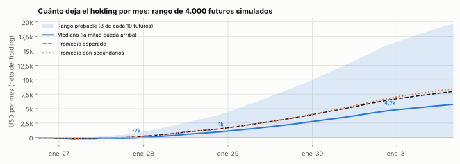
Cada mes, la banda muestra dónde cae el ingreso neto del holding en 8 de cada 10 futuros simulados. La línea punteada naranja suma los 7 secundarios del backlog. Detalle año por año en el capítulo 19.
Esta versión responde a tu último mensaje punto por punto. El cambio de fondo: dejamos de pensar en "dos motores y una base" y pasamos a pensar en un holding de 9 proyectos, cada uno definido como proyecto de verdad (misión, alcance, versiones, difusión, roadmap a 2030, nombres y caso de negocio), más un backlog de 38 ideas en su versión viable, listas para activarse cuando se liberen horas.
| Lo que pediste | Dónde está |
|---|---|
| Difusión a costo cero y sin poner la cara, todas las formas, dentro de cada proyecto | Capítulo 5 (40 formas) y la sección «Cómo lo damos a conocer» de cada proyecto |
| Método «mirar lo que ya funciona» (MercadoLibre → eBay): replicar, mejorar o fusionar | Capítulo 4 y la sección «Lo que tomamos de otros» de cada proyecto; quedó como doctrina permanente |
| Explorar antes de descartar; lo chico puede volverse viral | Capítulo 4 (las 6 condiciones de los virales) y capítulo 20 (backlog en versión viable) |
| Suite cristiana con trivia, eventos, versículo, imágenes, versiones, lector, niveles, suscripción barata | Proyecto P1 · Senda (alcance y versiones) |
| Estudiar a fondo las apps cristianas, comunidades, torneos de iglesias; mirar hasta apps de fútbol | Proyecto P1 · Senda (benchmark de 15 apps y mecánicas) y bitácora de apps cristianas |
| Módulo para reuniones de jóvenes con juegos dentro de la app | Proyecto P1 · Senda Reunión (planificador + 10 juegos de sala + campamentos) |
| Benchmark de todos los bancos de preguntas bíblicas existentes, con filtro pregunta por pregunta, como base del banco propio | Proyecto P1 · Senda (contenido y roadmap: oct–nov de 2026; portugués en 2028) |
| Diferencial extraordinario en Logistic Lab (contar el proceso, subir un diagrama o PDF, la IA pregunta y simula) | Proyecto P2 · Andén (diferencial, con la verdad sobre lo que ya existe) |
| Cargar tu simulador de última milla como insumo | Proyecto P2 · Andén (recordatorio de mayo de 2027, cuidando la propiedad intelectual de tu empleador) |
| Los 5 cálculos logísticos, investigados en el mercado | Proyecto P2 · Andén (alcance y versión de lanzamiento) |
| Campo nuevo: Municipio y Estado (seguridad, salud, familia) | Capítulo 16 y productos de la fábrica (Todo Bien, Me Toca, De Turno) |
| Patentes: cuándo, si se puede, costos, importancia | Capítulo 17 (y marcas y anonimato) |
| Recordatorio: cargar tu agente de inversiones | Proyecto P3 · Cimiento (octubre de 2026) y capítulo 21 |
| Recordatorio: cargar tu agente de alquileres | Proyecto P7 · Posta (mayo de 2027) y capítulo 21 |
| Compra de una app o juego a mitad de 2027 | Proyecto P4 · Adopción (junio–julio de 2027) |
| Gantt proyectado a 2030 en una hoja grande, mes a mes, con resultados esperados | Capítulo 18 (hoja A3 + tabla mes a mes 2026–2027 + trimestres 2028–2030) |
| Claude Pro hasta fin de 2026 y después evaluar Max | Capítulo 18 (costos) y hito de diciembre de 2026 |
| Fábrica como suite con ejemplos concretos de las primeras apps | Proyecto P5 · Palanca Apps (Todo Bien, Rutea, Me Toca, De Turno) |
| Juegos web tangibles (lo leí como R1: la Q está debajo del 1) | Proyecto P6 · Carpincho Games (Hub Rush, Última Milla Tycoon, Palabras Vivas) |
| Sobrevivientes: alquileres con aviso anticipado, música funcional, música instrumental | Proyectos P7 · Posta, P8 · Sobremesa y P9 · Remanso |
| Hoja resumen de todo el holding, con el backlog | Capítulo 1 |
| Entrenar IA: eliminar o dejar solo algo fácil y seguro | Sale del plan; boleto opcional de 1 hora (capítulo 20, H1) |
| Horas en dólares: descartar si no es serio o simple | Sale del plan (capítulo 20, H2 y H3) |
| Ingreso por proyecto mes a mes a 5 años, caso de negocio de cada uno y tabla final año por año | Capítulo 19 (tablas y gráficos) y la sección «Caso de negocio» de cada proyecto |
| Ideas secundarias de las páginas 26–34 adaptadas a una versión viable, en backlog | Capítulo 20 |
| Nombres que peguen para cada proyecto | Sección «Nombres posibles» de cada proyecto (verificados contra conflictos) |
| Definición completa de cada proyecto (misión, visión, objetivos, alcance, metodología, roadmap…) | Capítulos 7 a 15 |
| Que todo esto quede como aprendizaje para el futuro | doctrina/08-formas-de-pensar.md, CLAUDE.md y perfil/fundador.md |
Me pediste que lo que hablamos no se quede en este informe sino que sea la forma de trabajar de acá en adelante. Quedó escrito en
la doctrina del repositorio (doctrina/08-formas-de-pensar.md), en CLAUDE.md y en tu perfil: cualquier sesión futura de Claude lo
lee antes de empezar.
Galperin vio eBay en Stanford y fundó MercadoLibre en 1999, pero no copió una web: construyó lo que faltaba en Latinoamérica (Mercado Pago, en 2003, para pagar en efectivo con custodia porque casi nadie tenía tarjeta). Esa es la receta: copiar el modelo que ya probó que la gente paga o usa, y ganar con lo local que el original no tiene.
| Caso | Lo que miraron | Lo que cambiaron para que funcione acá |
|---|---|---|
| MercadoLibre (1999) | eBay | Mercado Pago para pagar sin tarjeta; eBay terminó comprando el 19,5% (2001) |
| Apalabrados, Etermax (2011) | Juegos de palabras sociales tipo Scrabble | Español primero; en España llegó a estar en 1 de cada 2 celulares; 100 M+ descargas |
| Preguntados, Etermax (2013) | Las trivias existentes | Duelos por turnos y preguntas enviadas por los usuarios; 500 mil descargas por día en su pico; hecho en ~5 meses |
| OLX (2006) | Craigslist | Clasificados para el mundo fuera de EE.UU.; líder en Latinoamérica y Asia |
| Tiendanube (2011) | Plataformas de tiendas online | Medios de pago y envíos locales |
| Caso | Qué era | Qué pasó | Qué lo hizo explotar |
|---|---|---|---|
| Retrica (2014) | Cámara con filtros vintage | 370 M de usuarios | Llegó con la moda de la selfie; cada foto llevaba su marca |
| Flappy Bird (2013) | Juego de un toque | USD 50 mil por día en publicidad | Frustración compartible, partidas de segundos |
| Wordle (2021) | Una palabra por día | Vendido al New York Times por más de USD 1 M | Resultado compartible sin spoilers; uno por día |
| Lensa (2022) | Avatares con IA | USD 1,5 M por día en su pico | Primero con IA de imágenes; algo para mostrar |
| Locket (2022) | Fotos de amigos en el widget | 2 M de usuarios en 2 semanas; 80 M de descargas | Lanzado el 1 de enero con una función nueva del iPhone |
| Cal AI (2024) | Contar calorías con una foto | De 0 a ~USD 50 M por año en 18 meses | Una función simple con IA (ojo: pagó a 250 creadores) |
| "¿Estás muerto?" (2026) | Botón diario de "estoy bien" | App paga #1 de China en enero de 2026 | Tema universal (vivir solo), una sola función |
No se puede planear un viral, pero sí comprar muchos boletos baratos que cumplan estas condiciones y tener listo qué hacer si uno pega. Por eso la fábrica prueba muchos productos chicos y corta a los 90 días lo que no prende.
| Proyecto | Qué miramos | Qué incorporamos / nuestro diferencial |
|---|---|---|
| 📱 Senda | Duolingo · Preguntados (Etermax, Buenos Aires) · Gran DT y los prodes · Kahoot y Jackbox · El Impostor (viral en Argentina, fin de 2025) · Gartic Phone y StopotS (Brasil) · Pasapalabra · Wordle · YouVersion · Hallow (Pray40) · Bible Chat · Pulpit AI · Remember Me · Locket y Bible Lock · Spotify Wrapped |
|
| 🧰 Andén | AnyLogic (asistente de IA) y Siemens Plant Simulation (copiloto) · Text2Sim MCP (código abierto) · FlexSim · Omni Calculator y PackCalc · The Fresh Connection · Duolingo · Spoke/Circuit (ruteadores) |
|
| 💵 Cimiento | Escaleras de bonos y fondos indexados |
|
| 🏷️ Adopción | Flippa, Acquire, Microns |
|
| 🔁 Palanca Apps | «¿Estás muerto?» (China) y Snug (EE.UU.) · Spoke/Circuit · Calendarios de ANSES de los medios · Apps de farmacias de turno por ciudad · Flippa (apps que crecen sin publicidad paga) |
|
| 🎮 Carpincho Games | Pixel Flow y los puzzles de ordenar · Global Transport Tycoon Idle, Idle Courier Tycoon · Word Wipe (Poki) y trivias bíblicas de las tiendas · Truco Blyts (20–35 M de descargas) |
|
| 🔑 Posta | Leasebreak y Flip (Nueva York) · Openigloo · Grupos de Facebook de dueño directo · Roomix y las calculadoras de ajuste (Chequeado, Rents) |
|
| 🍷 Sobremesa | Soundtrack Your Brand, Rockbot, Mood Media · Tunio, Track Studios, Moodby · Lofi Girl |
|
| 🎹 Remanso | Canales de piano para orar en español (millones de vistas) · Lofi Girl · Brain.fm y Endel |
|
| # | Idea nueva | De dónde sale | Dónde va |
|---|---|---|---|
| N1 | Aviso diario para quien vive solo (Todo Bien) | «¿Estás muerto?» (China, ene-2026), Snug (EE.UU.) | Fábrica, producto 1 (jul-2027) |
| N2 | Ruteador para repartidores de Flex y cadetes (Rutea) | Spoke/Circuit (~USD 400 mil por mes) | Fábrica, producto 2 (oct-2027) |
| N3 | Del sermón a la semana, para pastores (Senda Púlpito) | Pulpit AI (en inglés, USD 49 por mes) | Senda, plan iglesia (2027) |
| N4 | Senda Reunión: planificador + juegos de sala + campamentos | Jackbox, El Impostor, Kahoot, Download Youth Ministry | Senda, canal principal (mar-2027) |
| N5 | Mercado de relevo de alquileres + reseñas de edificios | Leasebreak, Flip, Openigloo (Nueva York) | Posta (dic-2027) |
| N6 | Recordatorios de cobros y vencimientos del Estado (Me Toca) | Hueco entre los calendarios de los medios y la persona | Fábrica, producto 3 (mar-2028) |
| N7 | Farmacias de turno de todo el país (De Turno) | Apps fragmentadas por ciudad | Fábrica, producto 4 (jun-2028) |
| N8 | Logística pública por desafíos de innovación (Andén Ciudad) | UBA (recolección), DesafIA Ciudades (CAF) | Andén (2027–2028) |
| N9 | Truco contra una IA que chicanea | Truco Blyts (20–35 M de descargas) | Reserva del radar (2029) |
| N10 | Biblioteca de clásicos cristianos de dominio público narrados | Dwell, Audible | Senda (2028) |
| N11 | Academia de micro-lecciones para estudiantes de ingeniería | Duolingo + cátedras | Andén Aula (2027) y backlog A11 |
| N12 | Versión en portugués de lo que funcione (Brasil: 47 M de evangélicos) | Localización (+38% descargas por país) | Senda (2028) y la fábrica |
| N13 | Música para locales con certificado de licencia | Tunio, Track Studios, Moodby | Sobremesa (2028) |
| N14 | Hub de paquetes: puzzle de cinta con tema logístico (Hub Rush) | Pixel Flow y los puzzles de ordenar | Carpincho Games, juego 1 (sep-2027) |
| N15 | «Primero la Palabra»: versículo en el widget y la pantalla de bloqueo | Bible Lock, Psalmo, Locket | Senda (2027) |
El único costo es tiempo, y Claude produce casi todo: vos aprobás, publicás desde las cuentas de la marca y conversás. La idea que proponías (crear una cuenta temática, seguir y conversar con la gente, difundir y dejar que el boca a boca escale) es la número 9 de esta lista; acá están las otras 39.
| Canal | Dato que importa | Para qué lo usamos |
|---|---|---|
| 90–93% de los usuarios de internet en Argentina; los Canales llegaron a 500 M de usuarios | Canal propio de cada proyecto, estados, grupos | |
| Las páginas llegan a 1–6% de sus seguidores; los grupos, a 20–40% | Grupos propios (iglesias, alquileres, repartidores) | |
| "Reels de prueba" muestran el video primero a no seguidores; pesa más que te lo manden por mensaje que un me gusta | Cuentas temáticas de Senda y Posta | |
| TikTok | Cuentas sin cara con presentaciones de imágenes promocionan apps con millones de vistas; el look "100% IA" se satura | Clips del Impostor bíblico, tutoriales, relevos |
| YouTube | Se monetiza sin cara si hay aporte original; castiga lo masivo y las presentaciones sin narrativa | Música (Sobremesa, Remanso) y tutoriales de Andén |
| 537–619 M de usuarios; crece en Latinoamérica; un pin trae visitas durante meses | Imágenes con versículos, infografías | |
| Google y la IA | Las respuestas de IA recortan ~58% de los clics, pero las páginas con datos y herramientas siguen y son citadas | Calculadoras de Andén y de Posta |
| Tiendas | Ficha en el idioma del usuario: +38% de descargas; Google Play acepta nominaciones de apps nuevas | Todas las apps |
| Las páginas de empresa llegan a ~2–5% de sus seguidores | Solo vidriera de Andén, no canal principal |
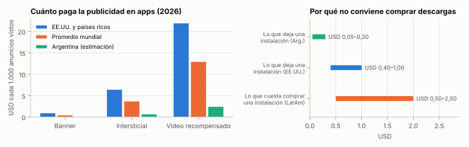
Comprar una instalación en Latinoamérica cuesta USD 0,50–2 y una app con publicidad deja USD 0,05–0,30 por instalación en toda su vida: no se recupera. La publicidad paga entra recién cuando un producto demuestra que cada usuario deja más de lo que cuesta traerlo (por ejemplo, Senda con suscriptores en EE.UU.).
Cada proyecto tiene un rol distinto y todos se apoyan entre sí: Senda trae usuarios al juego bíblico y a la música de oración, Andén le da tema y conocimiento a Rutea y a los juegos de logística, la fábrica y los juegos se promocionan unos a otros, y lo que sobra de todos compone en la renta.
La Biblia, paso a paso y en comunidad.
Contale tu operación. Andén te dice cuánto cuesta y dónde se traba.
La plata que no tiene mejor destino trabaja sola.
Aprender con un activo real que ya tiene usuarios.
Apps chicas que resuelven una cosa, donde la demanda ya existe.
Juegos cortos que enganchan, con un toque de logística y de acá.
El depto antes que nadie.
La música de tu lugar.
Música para orar, estudiar y descansar.
Todas las fichas tienen lo mismo y en el mismo orden:
Colores del roadmap: Claude, vos, juntos. "Si funciona" es el escenario normal cuando el proyecto funciona; "esperado" mezcla lo que pasa si funciona y si no, con sus chances. Todo es estimación con fuentes fechadas.
La app para crecer en la Biblia jugando, solo o con tu iglesia: niveles tipo Duolingo, trivia, versículo del día, lectura con audio, juegos para las reuniones de jóvenes y una liga entre iglesias.
Sostener la lectura de la Biblia cuesta; las apps que enganchan (niveles, rachas) están en inglés y separadas en cinco apps distintas; los líderes de jóvenes arman cada reunión desde cero y el Kahoot gratis admite 10 jugadores; las iglesias chicas no tienen app propia.
| Nombre | Por qué pega | Verificación (28-09-2026) |
|---|---|---|
| ★ Senda | Camino que se recorre paso a paso: es exactamente el camino de niveles. Corto, cálido, sirve en español y en portugués («senda» existe en los dos). | Sin app bíblica con ese nombre en la búsqueda del 28-09-2026; verificar INPI y dominio |
| Semilla | La parábola del sembrador; la mascota es una planta que crece con tu racha (como Finch o Manna). | Sin conflicto visible; verificar |
| Camino 66 | Los 66 libros de la Biblia; número fácil de recordar. | Verificar |
| Emaús | El camino donde Jesús explica las Escrituras (Lucas 24). | Cuidado: muy asociado a los retiros católicos de Emaús |
| Koinonía | Comunión: ideal para la parte de comunidad. | Largo; verificar |
| Verbo / Lumbrera / Maná / Arca | Buenas ideas, pero ya ocupadas o confusas. | Descartados: existen «Verbo: Bible Lessons» y «Lumbrera Plus»; Maná es una banda y Manna una app; ARCA es el organismo de impuestos |
Submarcas: Senda Reunión (módulo para jóvenes y grupos) · Liga Senda (torneo entre iglesias) · Senda Púlpito (del sermón a la semana, para pastores) · Semi, la mascota (una semillita que crece con tu racha)
| Miramos | Qué tomamos |
|---|---|
| Duolingo | Camino de niveles, racha, ligas semanales y la mascota que te recuerda volver (usuarios con racha de 7 días retienen 2,4 veces más). |
| Preguntados (Etermax, Buenos Aires) | Duelos por turnos y la «fábrica de preguntas» que envían los usuarios, con revisión. |
| Gran DT y los prodes | Ligas privadas y fecha semanal: la Liga Senda entre iglesias. |
| Kahoot y Jackbox | Juego proyectado en la pantalla con los celulares como control, gratis para grupos grandes. |
| El Impostor (viral en Argentina, fin de 2025) | El juego de moda en juntadas, con palabras bíblicas. |
| Gartic Phone y StopotS (Brasil) | Dibujá y adiviná, y Tutti Frutti, sin instalar. |
| Pasapalabra | El rosco, versión bíblica. |
| Wordle | Un desafío por día con resultado para compartir sin spoilers. |
| YouVersion | Planes de lectura con amigos, imágenes con versículos, QR para compartir en el culto. |
| Hallow (Pray40) | Desafíos con fecha que mueven a toda la comunidad a la vez. |
| Bible Chat | El compañero con IA y el SEO que trae usuarios desde Google, con límites doctrinales que ellos no tienen. |
| Pulpit AI | Del sermón a 20 piezas de contenido, en español. |
| Remember Me | Repetición espaciada para memorizar versículos. |
| Locket y Bible Lock | El versículo en el widget y la pantalla de bloqueo, a la vista todo el día. |
| Spotify Wrapped | Un resumen anual compartible. |
Tus horas por semana (promedio de cada año): 2026: 5,0 h · 2027: 3,1 h · 2028: 2,0 h · 2029: 1,5 h · 2030: 1,5 h
Usuarios activos por semana
| Supuesto o resultado | dic-26 | dic-27 | dic-28 | dic-29 | dic-30 | sep-31 |
|---|---|---|---|---|---|---|
| Usuarios activos por mes | 1.500 | 8.000 | 22.000 | 40.000 | 60.000 | 70.000 |
| Iglesias en el plan iglesia | 0 | 30 | 120 | 300 | 500 | 600 |
| Publicidad (video recompensado) (USD/mes) | 54 | 360 | 990 | 1.800 | 2.925 | 3.412 |
| Suscripción (USD/mes) | — | 156 | 515 | 1.080 | 1.680 | 1.960 |
| Plan iglesia (USD/mes) | — | 90 | 420 | 1.050 | 2.000 | 2.400 |
| Costos (USD/mes) | −48 | −146 | −334 | −550 | −810 | −930 |
| Neto del mes, si funciona | 6 | 460 | 1.591 | 3.380 | 5.795 | 6.842 |
| Promedio del año · si funciona (normal) | −30 | 229 | 1.073 | 2.560 | 4.688 | 6.377 |
| Promedio del año · esperado (con chances) | −40 | 68 | 340 | 807 | 1.474 | 2.002 |
Columnas: valor a fin de cada año (septiembre en 2031). Las dos últimas filas son promedios del año (2026: octubre a diciembre; 2031: enero a septiembre).
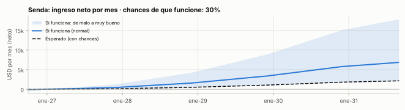
El laboratorio logístico en español: calculadoras con costos argentinos que se actualizan solas y un simulador al que le contás tu operación (con texto, audio, un diagrama o un PDF) y te devuelve el cuello de botella, el costo por paquete y qué cambiar.
Pymes, operadores de reparto y estudiantes deciden a ojo: FlexSim cuesta ~USD 6.000 por año y AnyLogic USD 12–19 mil; en español casi no hay herramientas; y los costos (combustible, paritarias, índices) cambian todos los meses.
| Nombre | Por qué pega | Verificación (28-09-2026) |
|---|---|---|
| ★ Andén | La palabra que todo logístico usa todos los días; corta, cálida y de acá. «Subilo a Andén». | Sin software logístico con ese nombre en la búsqueda del 28-09-2026; verificar INPI y dominio |
| Estiba | Término técnico con sonido fuerte: «Estiba: calculá, simulá, decidí». | Verificar |
| Gemelo | Remite al gemelo digital de tu depósito. | Verificar |
| Cuello | «Encontrá tu cuello de botella»: con humor y muy recordable. | Verificar |
| Nodo | Minimalista; red logística. | Nombre muy usado |
| Logistic Lab | Nombre de trabajo interno. | Genérico en inglés |
Submarcas: Andén Calculadoras (gratis) · Andén Simulá (contale tu operación) · Andén Aula (cátedras y academia) · Andén Ciudad (logística pública)
| Miramos | Qué tomamos |
|---|---|
| AnyLogic (asistente de IA) y Siemens Plant Simulation (copiloto) | Pasar de lenguaje natural a modelo; nosotros sumamos la entrevista, la entrada multimodal y el precio. |
| Text2Sim MCP (código abierto) | Motor de simulación con SimPy que Claude ya sabe usar: base técnica barata. |
| FlexSim | Plantillas logísticas (almacenamiento, picking, cross-dock). |
| Omni Calculator y PackCalc | Calculadoras simples como puerta de entrada por búsquedas. |
| The Fresh Connection | El juego de cadena de suministro para cátedras, en español. |
| Duolingo | Micro-lecciones con racha para estudiantes. |
| Spoke/Circuit (ruteadores) | El ruteo para repartidores, que va como producto aparte en la fábrica (P5). |
Tus horas por semana (promedio de cada año): 2026: 0,3 h · 2027: 3,0 h · 2028: 1,8 h · 2029: 1,5 h · 2030: 1,5 h
Cálculos y simulaciones hechas por semana
| Supuesto o resultado | dic-26 | dic-27 | dic-28 | dic-29 | dic-30 | sep-31 |
|---|---|---|---|---|---|---|
| Usuarios por mes | 0 | 2.000 | 5.000 | 9.000 | 13.000 | 15.000 |
| Profesionales pagos | 0 | 25 | 70 | 130 | 200 | 240 |
| Cátedras | 0 | 2 | 5 | 9 | 14 | 16 |
| Plan Pro (USD/mes) | — | 300 | 910 | 1.820 | 3.000 | 3.600 |
| Cátedras (USD/mes) | — | 120 | 300 | 540 | 840 | 960 |
| Equipos (USD/mes) | — | — | 240 | 720 | 1.440 | 1.920 |
| Costos (USD/mes) | −22 | −98 | −225 | −395 | −580 | −680 |
| Neto del mes, si funciona | −22 | 322 | 1.225 | 2.685 | 4.700 | 5.800 |
| Promedio del año · si funciona (normal) | −7 | 95 | 811 | 2.016 | 3.776 | 5.311 |
| Promedio del año · esperado (con chances) | −8 | 21 | 263 | 650 | 1.212 | 1.702 |
Columnas: valor a fin de cada año (septiembre en 2031). Las dos últimas filas son promedios del año (2026: octubre a diciembre; 2031: enero a septiembre).
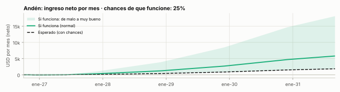
Cada mes, la parte del aporte y de las ganancias que no tiene mejor destino compra un tramo de una escalera de instrumentos en dólares. Es lo único 100% pasivo del holding.
Sin una base que rinda, cada dólar que no se usa pierde contra la inflación en dólares y no hay colchón para apostar en lo demás.
| Nombre | Por qué pega | Verificación (28-09-2026) |
|---|---|---|
| ★ Cimiento | Lo que sostiene todo lo demás. Nombre interno (no sale al público). | Uso interno |
| Colchón | El ahorro argentino de toda la vida, pero rindiendo. | Uso interno |
| Base | Simple y claro. | Uso interno |
| Miramos | Qué tomamos |
|---|---|
| Escaleras de bonos y fondos indexados | Diversificar por plazo y emisor; costo bajo. |
Tus horas por semana (promedio de cada año): 2026: 0,4 h · 2027: 0,3 h · 2028: 0,3 h · 2029: 0,3 h · 2030: 0,3 h
Capital en renta y rendimiento anual en dólares
| Supuesto o resultado | dic-26 | dic-27 | dic-28 | dic-29 | dic-30 | sep-31 |
|---|---|---|---|---|---|---|
| Capital en renta (mediana, USD) | 2.955 | 3.053 | 11.076 | 27.597 | 55.501 | 84.334 |
| Interés del mes (mediana, USD) | 14 | 14 | 53 | 136 | 277 | 425 |
| Capital en el peor caso razonable (1 de cada 10) | 2.955 | 2.259 | 5.384 | 9.434 | 13.793 | 17.327 |
| Promedio del año · si funciona (normal) | 12 | 15 | 32 | 94 | 207 | 357 |
| Promedio del año · esperado (con chances) | 12 | 16 | 39 | 118 | 268 | 471 |
Columnas: valor a fin de cada año (septiembre en 2031). Las dos últimas filas son promedios del año (2026: octubre a diciembre; 2031: enero a septiembre).
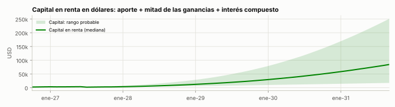
A mitad de 2027, comprar en Flippa una app o juego Android con ingresos de AdMob verificados (USD 50–150 por mes) por USD 1.000–2.500, mejorarlo con IA y sumarlo a la red de promoción cruzada de la cartera.
Aprender a operar apps que facturan lleva años si se empieza de cero; comprar una chica con ingresos verificados acorta el camino y deja un activo.
| Nombre | Por qué pega | Verificación (28-09-2026) |
|---|---|---|
| ★ Adopción | Adoptamos una app que ya camina y la cuidamos mejor. Nombre interno: la app comprada conserva su marca. | Uso interno |
| Segunda mano | Directo y simpático. | Uso interno |
| Miramos | Qué tomamos |
|---|---|
| Flippa, Acquire, Microns | Ingresos verificados por integración, precios de ~2–3 veces el beneficio anual. |
Tus horas por semana (promedio de cada año): 2026: 0,0 h · 2027: 0,7 h · 2028: 0,3 h · 2029: 0,3 h · 2030: 0,3 h
Ingreso mensual de AdMob contra el de la compra
| Supuesto o resultado | dic-26 | dic-27 | dic-28 | dic-29 | dic-30 | sep-31 |
|---|---|---|---|---|---|---|
| Publicidad de la app comprada (USD/mes) | — | 110 | 130 | 130 | 120 | 115 |
| Costos (USD/mes) | — | −15 | −15 | −15 | −15 | −15 |
| Neto del mes, si funciona | — | 95 | 115 | 115 | 105 | 100 |
| Promedio del año · si funciona (normal) | — | 45 | 106 | 115 | 110 | 102 |
| Promedio del año · esperado (con chances) | — | 30 | 65 | 68 | 64 | 60 |
Columnas: valor a fin de cada año (septiembre en 2031). Las dos últimas filas son promedios del año (2026: octubre a diciembre; 2031: enero a septiembre).
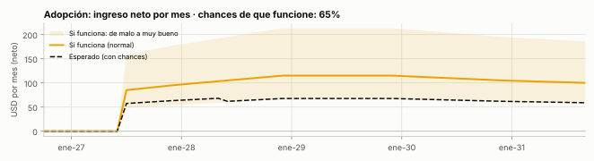
Una suite de apps chicas y útiles: cada trimestre Claude trae 3 candidatas con datos (lo que ya funciona afuera y no existe acá), vos elegís una, se lanza en el canal donde la demanda ya existe y a los 90 días se sigue o se corta.
Una sola app es una apuesta; muchas apps chicas, hechas en días con Claude y conectadas entre sí, suben las chances de acertar y se promocionan unas a otras.
| Nombre | Por qué pega | Verificación (28-09-2026) |
|---|---|---|
| ★ Palanca Apps | La suite lleva el nombre del holding: cada app suma a la marca del editor. | Verificar junto con el holding |
| Taller | Donde se hacen cosas útiles, una por trimestre. | Nombre común |
| Brote Apps | Si el holding se llama Brote. | Verificar |
Un toque por día (o un 👍 por WhatsApp) para decir «estoy bien». Si no llega a la hora elegida, avisa a los familiares. Para personas mayores que viven solas y para jóvenes que viven solos; lo pagan los hijos, también los que viven afuera.
Por qué: En enero de 2026 una app así («¿Estás muerto?») fue la app paga más descargada de China; Snug lo hace en EE.UU. En Argentina hay 1,26 millones de hogares de mayores de 65 que viven solos y en CABA el 40% de los hogares es de una persona. En español no hay un líder.
Ruteador para repartidores de Envíos Flex y cadetes: cargás las paradas (pegando direcciones o escaneando la etiqueta), te ordena el recorrido y te dice cuánto te queda por paquete con la tarifa de Flex.
Por qué: Spoke (ex Circuit) deja ~USD 400 mil por mes en EE.UU.; en AMBA hay más de 200 empresas de reparto de Flex y miles de repartidores con rutas largas. Tu conocimiento de última milla es la ventaja.
Recordatorios personales de lo que el Estado te paga o te cobra: fecha de cobro de ANSES según tu DNI, vencimientos de ARCA y monotributo, recategorización, VTV, licencia, vacunas de los chicos. Por app y por WhatsApp.
Por qué: Los medios publican el calendario de ANSES todos los meses, pero nadie te avisa a vos; es un hueco entre el Estado y la persona (campo Municipio y Estado).
Farmacias de turno de todo el país en una sola app y web (hoy hay una app distinta por ciudad), con guardias cercanas y teléfonos útiles.
Por qué: Búsqueda diaria y recurrente, mercado fragmentado por localidad; el trabajo es juntar y mantener los datos (colegios de farmacéuticos).
Un producto por trimestre elegido entre 3 candidatas con datos. Reservas ya identificadas: Truco contra una IA que «chicanea»; versiones en portugués de lo que funcione; apps útiles que existen solo en inglés; extensiones de Chrome de nicho.
| Miramos | Qué tomamos |
|---|---|
| «¿Estás muerto?» (China) y Snug (EE.UU.) | Todo Bien. |
| Spoke/Circuit | Rutea. |
| Calendarios de ANSES de los medios | Me Toca, personalizado. |
| Apps de farmacias de turno por ciudad | De Turno, nacional. |
| Flippa (apps que crecen sin publicidad paga) | El tipo de producto y el canal, no una app puntual. |
Tus horas por semana (promedio de cada año): 2026: 0,0 h · 2027: 0,7 h · 2028: 1,5 h · 2029: 1,5 h · 2030: 1,5 h
Productos que superan USD 300 por mes
| Supuesto o resultado | dic-26 | dic-27 | dic-28 | dic-29 | dic-30 | sep-31 |
|---|---|---|---|---|---|---|
| Todo Bien (lanza jul-27, 15%) · si funciona | · | 60 | 485 | 1.235 | 1.985 | 2.360 |
| Rutea (lanza oct-27, 15%) · si funciona | · | 50 | 505 | 1.205 | 1.905 | 2.255 |
| Me Toca (lanza mar-28, 12%) · si funciona | · | · | 80 | 280 | 480 | 580 |
| De Turno (lanza jun-28, 15%) · si funciona | · | · | 81 | 345 | 525 | 585 |
| Productos del radar (8 lanzamientos, 15% cada uno) · aporte esperado | · | · | 6 | 172 | 490 | 653 |
| Si al menos uno pega (promedio condicionado) | — | 19 | 207 | 732 | 1.419 | 1.762 |
| Promedio del año · si funciona (normal) | — | 3 | 111 | 466 | 1.097 | 1.626 |
| Promedio del año · esperado (con chances) | — | −7 | 91 | 410 | 980 | 1.455 |
Columnas: valor a fin de cada año (septiembre en 2031). Las dos últimas filas son promedios del año (2026: octubre a diciembre; 2031: enero a septiembre).
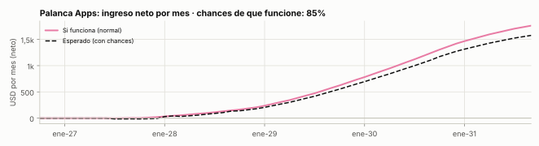
Juegos de navegador cortos que Claude programa en 1–3 semanas; el portal (CrazyGames, Poki) los muestra a millones, mide gratis si enganchan y reparte la publicidad. El que pega pasa a celular con el mismo código.
Hacer un juego de celular y conseguir jugadores cuesta caro; en los portales la demanda ya existe (CrazyGames: 50 M de jugadores por mes) y el lanzamiento de prueba dice en semanas si el juego sirve.
| Nombre | Por qué pega | Verificación (28-09-2026) |
|---|---|---|
| ★ Carpincho Games | El carpincho (capibara) es un fenómeno mundial en internet y es bien argentino: da simpatía en los portales globales y cuenta de dónde venimos. | Verificar |
| Mate Arcade | Identidad argentina, suena a juegos para pasar el rato. | Verificar |
| Pampa Play | Corto y sonoro. | Verificar |
Puzzle de ordenar paquetes por destino sobre una cinta transportadora, ambientado en un centro de distribución: el género de puzzles que más crece, con tu conocimiento de última milla como tema.
Por qué: Los puzzles de ordenar duplicaron su ingreso desde 2024 (USD 279 M en 2025) y los de cinta transportadora son los que más crecen (Pixel Flow: USD 94 M).
Juego de gestión (idle tycoon): empezás con una moto y un depósito chico y construís un operador logístico; aprendés conceptos reales sin que se note.
Por qué: Los tycoons de transporte funcionan en portales y en celular (60–70% del ingreso es video recompensado); ninguno tiene realismo de última milla.
Juego de palabras bíblicas (conectar letras y descubrir versículos) para portales, que trae jugadores a Senda con promoción cruzada.
Por qué: Los juegos de palabras son de los que más se juegan en portales; en tiendas, «Bible Trivia - Word Quiz» tiene 8,5 M de descargas.
Dos juegos por año desde 2029, elegidos con los datos de retención de los anteriores (candidatos: Truco contra una IA que chicanea, Impostor bíblico online, rosco).
| Miramos | Qué tomamos |
|---|---|
| Pixel Flow y los puzzles de ordenar | La mecánica que más crece, con tema propio (Hub Rush). |
| Global Transport Tycoon Idle, Idle Courier Tycoon | El género tycoon, con realismo de última milla. |
| Word Wipe (Poki) y trivias bíblicas de las tiendas | Palabras Vivas. |
| Truco Blyts (20–35 M de descargas) | Candidato de reserva: Truco contra una IA con personalidad. |
Tus horas por semana (promedio de cada año): 2026: 0,0 h · 2027: 0,2 h · 2028: 0,7 h · 2029: 0,8 h · 2030: 0,8 h
Porcentaje que vuelve al día siguiente en el portal
| Supuesto o resultado | dic-26 | dic-27 | dic-28 | dic-29 | dic-30 | sep-31 |
|---|---|---|---|---|---|---|
| Hub Rush (lanza sep-27, 15%) · si funciona | · | 145 | 445 | 345 | 245 | 195 |
| Última Milla Tycoon (lanza feb-28, 12%) · si funciona | · | · | 390 | 890 | 790 | 690 |
| Palabras Vivas (lanza may-28, 15%) · si funciona | · | · | 145 | 295 | 245 | 215 |
| Juegos del radar (3 lanzamientos, 12% cada uno) · aporte esperado | · | · | · | 41 | 110 | 110 |
| Si al menos uno pega (promedio condicionado) | — | 38 | 239 | 430 | 491 | 449 |
| Promedio del año · si funciona (normal) | — | 6 | 137 | 326 | 473 | 479 |
| Promedio del año · esperado (con chances) | — | 3 | 86 | 211 | 313 | 320 |
Columnas: valor a fin de cada año (septiembre en 2031). Las dos últimas filas son promedios del año (2026: octubre a diciembre; 2031: enero a septiembre).
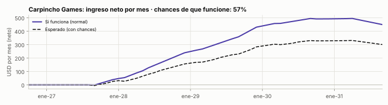
El inquilino que se va avisa primero (y se ahorra la multa por irse antes si el dueño acepta al reemplazo), el que busca se entera antes que nadie por su barrio, y todos ven reseñas honestas del edificio.
Los mejores departamentos de dueño directo se van en horas en grupos de Facebook de 50 mil personas; el inquilino que se va antes paga el 10% del alquiler que falta; el dueño pierde meses vacío; y nadie sabe si el edificio tiene humedad, ruido o un dueño imposible.
| Nombre | Por qué pega | Verificación (28-09-2026) |
|---|---|---|
| ★ Posta | Doble sentido perfecto en Argentina: «la posta» (el dato bueno, lo que no sabe nadie) y la «posta» de la carrera de relevos (el que se va le pasa el depto al que llega). | Sin app de alquileres con ese nombre en la búsqueda del 28-09-2026; verificar INPI |
| Relevo | Dice exactamente lo que pasa: un inquilino releva al otro. | Verificar |
| Llave | Corto, simbólico: la llave pasa de mano. | Verificar |
| Primero | Enterate primero. | Verificar |
| Antesala | Lo que pasa antes de que salga a los portales. | Verificar |
| Miramos | Qué tomamos |
|---|---|
| Leasebreak y Flip (Nueva York) | El mercado de traspasos y subalquileres: el que se va vende «los meses que le quedan». |
| Openigloo | Reseñas anónimas de edificios y dueños; gratis si dejás una reseña. |
| Grupos de Facebook de dueño directo | Dónde está hoy la demanda (y la difusión). |
| Roomix y las calculadoras de ajuste (Chequeado, Rents) | La IA para buscar y las calculadoras como puerta de entrada. |
Tus horas por semana (promedio de cada año): 2026: 0,0 h · 2027: 0,5 h · 2028: 1,4 h · 2029: 1,0 h · 2030: 1,0 h
Relevos concretados por mes
| Supuesto o resultado | dic-26 | dic-27 | dic-28 | dic-29 | dic-30 | sep-31 |
|---|---|---|---|---|---|---|
| Suscriptores de alertas | 0 | 0 | 150 | 400 | 700 | 850 |
| Relevos concretados por mes | 0 | 0 | 15 | 30 | 50 | 60 |
| Alertas tempranas (USD/mes) | — | — | 450 | 1.200 | 2.100 | 2.550 |
| Relevos concretados (USD/mes) | — | — | 375 | 750 | 1.250 | 1.500 |
| Afiliados (garantías y mudanzas) (USD/mes) | — | — | 200 | 500 | 900 | 1.100 |
| Costos (USD/mes) | — | −40 | −55 | −80 | −110 | −125 |
| Neto del mes, si funciona | — | −40 | 970 | 2.370 | 4.140 | 5.025 |
| Promedio del año · si funciona (normal) | — | −10 | 464 | 1.728 | 3.329 | 4.632 |
| Promedio del año · esperado (con chances) | — | −10 | 50 | 211 | 406 | 565 |
Columnas: valor a fin de cada año (septiembre en 2031). Las dos últimas filas son promedios del año (2026: octubre a diciembre; 2031: enero a septiembre).
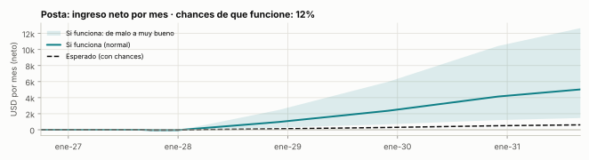
Música de ambiente hecha con IA y elegida a mano, por estilo y por momento del día: bossa nova para el almuerzo, flamenco para la bodega, tango lounge para el bar, lounge para el hotel. El canal de YouTube es la vidriera; las listas con licencia para locales, el negocio.
Bares, restaurantes, hoteles y comercios necesitan música que acompañe y no aburra; los servicios con licencia cuestan USD 27–80 por local por mes; y en Argentina los locales abiertos al público siguen pagando SADAIC/AADI-CAPIF por música de repertorio.
| Nombre | Por qué pega | Verificación (28-09-2026) |
|---|---|---|
| ★ Sobremesa | La charla después de comer: la palabra más linda del español para la música de un restaurante o un hotel. Evoca calidez y tiempo sin apuro. | Existe una app de recetas «Sobremesa» (otra categoría); sin servicio de música con ese nombre; verificar INPI en clases 9 y 41 |
| Vermú | La hora del vermú, bien porteña y de moda. | Verificar |
| Mantel | Corto, gastronómico. | Verificar |
| Terraza | Ambiente relajado, de hotel o de bar. | Verificar |
| Lobby | Para la línea de hoteles. | Genérico |
Submarcas: Sobremesa Bossa · Sobremesa Flamenco · Sobremesa Jazz · Sobremesa Tango Lounge · Sobremesa Lobby (hoteles) · Sobremesa Café
| Miramos | Qué tomamos |
|---|---|
| Soundtrack Your Brand, Rockbot, Mood Media | El modelo B2B por local y por mes, con licencia incluida. |
| Tunio, Track Studios, Moodby | Catálogo con IA sin regalías y reproductor con horarios, a precio bajo. |
| Lofi Girl | Identidad visual propia y el directo 24/7 como vidriera. |
Tus horas por semana (promedio de cada año): 2026: 0,0 h · 2027: 0,2 h · 2028: 0,6 h · 2029: 0,5 h · 2030: 0,5 h
Horas de reproducción por mes
| Supuesto o resultado | dic-26 | dic-27 | dic-28 | dic-29 | dic-30 | sep-31 |
|---|---|---|---|---|---|---|
| Vistas por mes | 0 | 15.000 | 150.000 | 400.000 | 700.000 | 800.000 |
| Locales suscriptos | 0 | 0 | 15 | 60 | 130 | 170 |
| YouTube (USD/mes) | — | — | 225 | 600 | 1.050 | 1.200 |
| Locales (B2B) (USD/mes) | — | — | 180 | 720 | 1.560 | 2.040 |
| Costos (USD/mes) | — | −40 | −55 | −100 | −170 | −210 |
| Neto del mes, si funciona | — | −40 | 350 | 1.220 | 2.440 | 3.030 |
| Promedio del año · si funciona (normal) | — | −13 | 119 | 821 | 1.881 | 2.768 |
| Promedio del año · esperado (con chances) | — | −14 | — | 118 | 269 | 395 |
Columnas: valor a fin de cada año (septiembre en 2031). Las dos últimas filas son promedios del año (2026: octubre a diciembre; 2031: enero a septiembre).
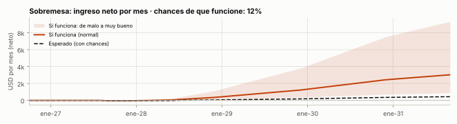
Un sello de música instrumental hecha con IA y elegida a mano: piano para orar, música para estudiar y para dormir, con canales de identidad propia en YouTube, directos 24/7 y distribución en plataformas. La serie de oración suena también dentro de Senda.
Mucha gente busca música para orar, concentrarse o dormir; los canales que la ofrecen o están en inglés o suben música en masa sin identidad (y YouTube los desmonetiza).
| Nombre | Por qué pega | Verificación (28-09-2026) |
|---|---|---|
| ★ Remanso | Agua quieta en un río: calma. Remite a «Oración del remanso» (canción argentina muy querida). | Existe un canal «Remanso Pacífico» (música del Pacífico colombiano): distinta categoría; verificar INPI |
| Aguas de Reposo | «Junto a aguas de reposo me pastoreará» (Salmo 23). Perfecto para la serie de piano para orar. | Verificar |
| Quietud | Minimalista y claro. | Verificar |
| Andante | Término musical: a paso tranquilo. | Muy usado |
Submarcas: Aguas de Reposo (piano para orar) · Remanso Estudio · Remanso Dormir
| Miramos | Qué tomamos |
|---|---|
| Canales de piano para orar en español (millones de vistas) | El formato de videos de 1 hora «sin anuncios intermedios» y los directos. |
| Lofi Girl | Identidad visual y directo 24/7. |
| Brain.fm y Endel | Series pensadas para un uso (concentrarse, dormir). |
Tus horas por semana (promedio de cada año): 2026: 0,0 h · 2027: 0,5 h · 2028: 0,5 h · 2029: 0,5 h · 2030: 0,5 h
Horas de reproducción por mes
| Supuesto o resultado | dic-26 | dic-27 | dic-28 | dic-29 | dic-30 | sep-31 |
|---|---|---|---|---|---|---|
| Vistas por mes | 0 | 80.000 | 350.000 | 800.000 | 1.200.000 | 1.400.000 |
| YouTube (USD/mes) | — | 160 | 700 | 1.600 | 2.400 | 2.800 |
| Plataformas (Spotify, YouTube Music) (USD/mes) | — | 16 | 70 | 160 | 240 | 280 |
| Costos (USD/mes) | — | −30 | −30 | −30 | −30 | −30 |
| Neto del mes, si funciona | — | 146 | 740 | 1.730 | 2.610 | 3.050 |
| Promedio del año · si funciona (normal) | — | 26 | 468 | 1.276 | 2.207 | 2.854 |
| Promedio del año · esperado (con chances) | — | −16 | 86 | 232 | 400 | 518 |
Columnas: valor a fin de cada año (septiembre en 2031). Las dos últimas filas son promedios del año (2026: octubre a diciembre; 2031: enero a septiembre).
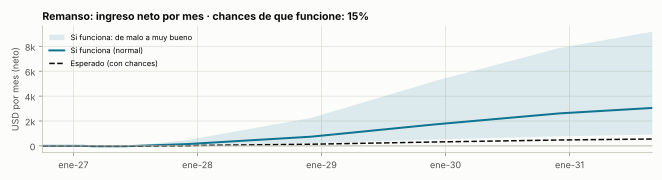
Me pediste explorar cómo hacer más eficiente al municipio y al Estado en seguridad, salud y familia. La conclusión corta: venderle software al Estado choca con tu perfil (licitaciones, reuniones, ciclos políticos, pagos lentos, y ya hay jugadores con más de mil municipios), pero hay dos puertas que sí encajan: productos del lado del ciudadano, que se difunden solos, y convocatorias de innovación abierta, donde se aplica online y el municipio prueba con financiamiento.
| Dato (2025–2026) | Qué implica |
|---|---|
| MuniDigital (Córdoba, 2015): 1.000+ municipios en 10 países, 16+ módulos; la CAF le midió retornos de más de 700% | El software de gestión municipal ya tiene dueño |
| Apps municipales de alerta y botón antipánico en La Plata, Chivilcoy (1.500 activas, ligadas al 911), Villa María, Campana y Pilar | La seguridad vecinal ya la cubren los municipios |
| CABA da turnos por web y por su WhatsApp (Boti); Mar del Plata muestra la espera de las guardias | Salud digital en marcha, dispar entre ciudades |
| Farmacias de turno: una app distinta por ciudad | Hueco: una referencia nacional |
| El calendario de ANSES lo publican todos los medios cada mes | Hueco: nadie te avisa a vos |
| 1,26 M de hogares de mayores de 65 que viven solos (Censo 2022, +50% vs 2010); 40% de los hogares de CABA son de una persona | Familia: el problema de vivir solo crece |
| En China, un botón diario de "estoy bien" fue la app paga más descargada en enero de 2026; en EE.UU. existe Snug | Modelo probado, sin líder en español |
| La UBA optimizó la recolección de residuos de 4 municipios; hay casos con 28,6% menos km por día | Logística pública: ahorro probado |
| Convocatorias que financian pilotos: DesafIA Ciudades (CIIAR + CAF), Escala GovTech (Universidad Austral), FITBA 2026 (Provincia) | Se entra sin salir a vender |
| Elecciones el 24-10-2027; nuevas gestiones desde el 10-12-2027 | Ventana: planes de 2028 |
Un toque por día (o un 👍 por WhatsApp) para decir «estoy bien»; si no llega a la hora elegida, avisa a los familiares. Producto 1 de la fábrica (P5).
Por qué: «¿Estás muerto?» fue la app paga más descargada de China en enero de 2026; Snug lo hace en EE.UU.; en Argentina hay 1,26 M de hogares de mayores de 65 que viven solos. En español no hay líder.
Va en Palanca Apps
Plantilla de Andén para optimizar recorridos municipales, presentada a convocatorias de innovación abierta que financian pilotos (sin salir a vender).
Por qué: Ahorros probados (la UBA optimizó recolección para 4 municipios; hasta 28,6% menos km por día), pero el Estado paga lento y cambia con la política. Se entra por convocatoria, no vendiendo.
Mejor versión: Dentro de Andén: presentarse a 1–2 convocatorias por año y avanzar solo con piloto financiado.
Va en Andén
Hoy hay una app distinta por ciudad; una sola referencia nacional con guardias cercanas. Producto 4 de la fábrica (P5).
Por qué: Mercado fragmentado por localidad, con búsqueda diaria; el trabajo es juntar y mantener los datos.
Va en Palanca Apps
Los medios publican calendarios; nadie te avisa a vos. Por app y por WhatsApp. Producto 3 de la fábrica (P5).
Por qué: Hueco entre el Estado y la persona; los avisos de utilidad por WhatsApp siguen permitidos (~USD 0,012 por mensaje).
Va en Palanca Apps
Mapa, avisos verificados y derivación al 911 o al municipio.
Por qué: Muchos municipios ya tienen apps de alerta y botón antipánico (La Plata, Chivilcoy, Villa María, Campana, Pilar); riesgo de falsas alarmas y de estigmatizar barrios; necesita moderación.
Mejor versión: Solo si un municipio lo quiere como piloto por una convocatoria.
Reclamos, tareas y trámites municipales.
Por qué: Choca con el perfil (licitaciones, reuniones, ciclos políticos, pagos lentos) y ya hay jugadores con 1.000+ municipios (MuniDigital).
Mejor versión: Entrar por convocatorias con Logística pública (M2) y por productos del lado del ciudadano (M1, M3, M4).
Se reactiva si: M2 gana un desafío o aparece un integrador que venda por nosotros.
En Argentina, no. La ley de patentes (24.481, artículo 6) dice que no son invenciones los programas de computación ni los métodos para actividades comerciales, de juego o intelectuales. La única excepción es el software integrado a un dispositivo que produce un efecto técnico en el mundo físico. Apps, juegos, contenidos y calculadoras quedan afuera.
En EE.UU., es posible pero rara vez conviene: se patenta solo una mejora técnica concreta, y el proceso completo con abogados cuesta USD 10.000–20.000 o más. La idea de Andén (contar el proceso y que la IA arme la simulación) ya tiene antecedentes públicos (asistentes de AnyLogic y Siemens, papers de 2025–2026, código abierto), así que sería muy difícil probar que es nueva.
| Tema | Argentina | EE.UU. |
|---|---|---|
| Software | No patentable (salvo efecto técnico en un dispositivo) | Solo mejoras técnicas concretas; caro y difícil |
| Período de gracia (si lo mostraste antes de presentar) | 1 año, declarándolo | 1 año |
| Primer paso barato | — | Patente provisional: USD 65 de tasa para microentidad; da 12 meses para decidir |
| Costo total con abogados | Miles de dólares | USD 10.000–20.000+ |
Solo si aparece una invención técnica concreta (un algoritmo con efecto medible, un dispositivo) y el proyecto ya factura más de USD 5.000 por mes. En ese caso: patente provisional en EE.UU. antes de mostrarla en público, revisada por un agente de patentes, y en 12 meses se decide si vale la definitiva. Hoy, ninguno de los nueve proyectos lo justifica.
| Herramienta | Costo 2026 | Cuándo |
|---|---|---|
| Marca en el INPI | 100 UMAPI por clase: ~$41.000 (≈ USD 27) por clase desde el 1-10-2026; se actualiza por inflación | Antes del lanzamiento público de cada proyecto que siga (clases 9 software, 41 educación y juegos, 42 software como servicio) |
| Marca en EE.UU. | USD 350 por clase | Cuando EE.UU. sea un mercado real |
| Otros países | Argentina no está en el Protocolo de Madrid (el acuerdo con EE.UU. de feb-2026 obliga a tratarlo antes de fin de 2027): país por país | Solo donde se facture |
| Derecho de autor | Automático; depósito de software en la DNDA: $1.400, vale 3 años | Opcional, como prueba de fecha |
| Secretos | Gratis: bancos de preguntas, modelos de costos, datos | Siempre |
Lo hecho solo con IA no tiene derechos de autor (en EE.UU.: informe de la Oficina de Derechos de Autor de enero de 2025, fallo Thaler v. Perlmutter de marzo de 2025, la Corte Suprema no lo revisó en marzo de 2026). Escribir un prompt no alcanza: hace falta aporte humano. Para la música y las imágenes eso significa que otros las pueden copiar: el valor está en la marca, la curaduría y el canal.
| Tienda | Cuenta personal | Cuenta de empresa |
|---|---|---|
| Google Play | Tu nombre legal y país; si hay compras dentro, también tu dirección. Necesita 12 testers durante 14 días | Nombre y dirección de la empresa; no necesita los 12 testers; pide un número D-U-N-S (gratis, hasta 30 días) |
| App Store | Tu nombre legal como vendedor (no se aceptan alias) | La empresa como vendedor |
Opciones de empresa (estimaciones de proveedores, a confirmar con un contador):
No es asesoramiento legal. Fuentes: Ley 24.481; INPI y proveedores de marcas (sep-2026); USPTO; DNDA; Google Play
y Apple Developer (2026); Oficina de Derechos de Autor de EE.UU. Detalle en conocimiento/2026-09-28-patentes-marcas-anonimato.md.
El objetivo que pusiste es claro: consolidar el holding en lo que queda de 2026 y en 2027, y llegar a fin de 2027 en buen estado. El plan lo traduce así: 2026 es para lanzar Senda y ordenar la base; 2027 es el año de construir las nueve líneas con reglas de corte; 2028 es el año de escalar lo que funcionó; 2029 y 2030 son para multiplicar (portugués, nuevas ciudades, un producto por trimestre, secundarios del backlog) y decidir si conviene contratar ayuda o vender algún activo.
La hoja grande que sigue muestra todo junto. Después, el detalle mes a mes hasta diciembre de 2027 y por trimestre hasta 2030.
| Mes y foco | Qué hacemos | Qué esperamos | h/sem | USD/mes esperado |
|---|---|---|---|---|
| oct-26 Arrancar sin gastar
|
|
|
5,5 | −74 |
| nov-26 Senda casi lista
|
|
|
5,5 | −72 |
| dic-26 Lanzar antes del 1 de enero
|
|
|
6,3 | −66 |
| ene-27 La ola de Año Nuevo
|
|
|
7,8 | −134 |
| feb-27 Senda Reunión
|
|
|
7,8 | −123 |
| mar-27 Arranca el año de las iglesias
|
|
|
9,8 | −188 |
| abr-27 Primer hito de corte
|
|
|
9,3 | −149 |
| may-27 Cargar lo que ya tenés
|
|
|
9,8 | −135 |
| jun-27 Andén Pro y la compra
|
|
|
9,8 | −121 |
| jul-27 Mitad de año: compra y primer producto
|
|
|
8,8 | −41 |
| ago-27 Cátedras y juegos
|
|
|
8,8 | −12 |
| sep-27 Segundo hito de corte
|
|
|
9,6 | −9 |
| oct-27 Más tiros
|
|
|
9,1 | −3 |
| nov-27 Senda completa
|
|
|
9,6 | 49 |
| dic-27 Cierre del año de construcción
|
|
|
9,6 | 103 |
Los puntos de color muestran qué proyectos tienen horas ese mes. «USD/mes esperado»: ingreso neto del holding ese mes (promedio de la simulación, ya descontados Claude, empresa y herramientas).
| Trimestre | Qué hacemos | Qué esperamos | Mediana | Rango probable |
|---|---|---|---|---|
| 2028 · T1 |
| Ingreso esperado a fin del trimestre: USD 419 por mes | 159 | −239 a 1.465 |
| 2028 · T2 |
| USD 793 por mes | 434 | −131 a 2.287 |
| 2028 · T3 |
| USD 1.189 por mes | 738 | −67 a 3.161 |
| 2028 · T4 |
| USD 1.533 por mes (mediana USD 1.007); 50% de chances de superar USD 1.000 | 1.007 | −71 a 4.005 |
| 2029 · T1 |
| USD 2.034 por mes | 1.360 | −71 a 5.310 |
| 2029 · T2 |
| USD 2.578 por mes | 1.742 | −61 a 6.648 |
| 2029 · T3 |
| USD 3.136 por mes | 2.146 | −61 a 8.010 |
| 2029 · T4 |
| USD 3.740 por mes | 2.603 | −50 a 9.464 |
| 2030 · T1 |
| USD 4.430 por mes | 3.114 | −45 a 11.118 |
| 2030 · T2 |
| USD 5.121 por mes | 3.589 | −44 a 12.764 |
| 2030 · T3 |
| USD 5.837 por mes | 4.151 | −33 a 14.494 |
| 2030 · T4 |
| USD 6.541 por mes (mediana USD 4.683; rango probable −USD 17 a USD 16.188) | 4.683 | −17 a 16.188 |
Mediana y rango probable (8 de cada 10 futuros) del ingreso neto del holding en el último mes del trimestre, USD/mes.
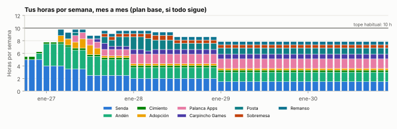
El plan base queda en 6–10 horas por semana (promedio de 9,1 horas en 2027). Algunos meses rozan el tope; como dijiste que por ahora no pasa nada si se supera un poco, lo que conviene adelantar con 1–2 horas más es Posta (alquileres) o el primer juego. Cuando un proyecto se corta, sus horas pasan al siguiente del backlog.
| Período | Plan | Costo | Por qué |
|---|---|---|---|
| oct–dic 2026 | Pro | USD 20/mes | Alcanza para construir Senda con ritmo (una sola construcción grande a la vez) |
| desde ene-2027 | Max 5x (a decidir en diciembre) | USD 100/mes | Enero arranca Andén mientras Senda crece: dos construcciones en paralelo |
| desde 2028 | Max 20x solo si la cartera deja más de USD 1.500/mes | USD 200/mes | Más productos por trimestre |
| si a mediados de 2028 nada cubre los costos | Volver a Pro | −USD 80/mes | Regla de ahorro (el modelo ya la aplica) |
| # | Cuándo | Qué se decide | USD/mes esperado ese mes |
|---|---|---|---|
| 1 | Diciembre de 2026 | ¿Pasamos a Claude Max? Sí, si la suite está lista para publicarse y Logistic Lab arranca en enero. | −66 |
| 2 | Febrero de 2027 | Empresa del holding (LLC o SAS) con un contador: antes de activar cobros. | −123 |
| 3 | Abril de 2027 | Suite cristiana: ¿1.000 usuarios activos por semana y 10% que vuelve? Si no, modo mantenimiento. | −149 |
| 4 | Julio de 2027 | Compra de la app (si alguna pasa los criterios) y lanzamiento del primer producto de la fábrica. | −41 |
| 5 | Septiembre de 2027 | Logistic Lab: ¿500 usuarios por mes o una cátedra? Si no, queda lo gratis. | −9 |
| 6 | Diciembre de 2027 | Comité anual: qué se acelera en 2028, qué se corta, ¿Max 20x o ayuda de un moderador? | 103 |
| 7 | Junio de 2028 | Versión en portugués de lo que funcione; ¿segunda compra más grande con caja propia? | 793 |
| 8 | Diciembre de 2028 | Comité anual: cartera contra renta; primer secundario del backlog si hay horas. | 1.533 |
| 9 | Diciembre de 2029 | Comité anual: ¿contratar ayuda (moderación, soporte) o vender un activo? | 3.740 |
| 10 | Diciembre de 2030 | Revisión a 5 años: estrategia 2031–2035. | 6.541 |
Estas tablas responden lo que pediste: cuánto dejaría cada proyecto por mes, año por año, y cuánto suma el holding con los proyectos principales y con los secundarios. Cada número sale del caso de negocio de su ficha (usuarios, conversión, precio, costos) y de una simulación de 4.000 futuros posibles. Son estimaciones, no promesas.
Ingreso neto promedio por mes en cada año (USD). Suma lo que pasa si funciona y si no, según las chances; por eso es la mejor guía para decidir, aunque ningún año real se va a parecer exactamente a este promedio.
| USD por mes, promedio del año | 2026 (oct–dic) | 2027 | 2028 | 2029 | 2030 | 2031 (ene–sep) |
|---|---|---|---|---|---|---|
| Senda Suite cristiana | −40 | 68 | 340 | 807 | 1.474 | 2.002 |
| Andén Logistic Lab | −8 | 21 | 263 | 650 | 1.212 | 1.702 |
| Cimiento Renta en dólares | 12 | 16 | 39 | 118 | 268 | 471 |
| Adopción Comprar una app que ya factura | — | 30 | 65 | 68 | 64 | 60 |
| Palanca Apps Fábrica de réplicas | — | −7 | 91 | 410 | 980 | 1.455 |
| Carpincho Games Juegos web en portales | — | 3 | 86 | 211 | 313 | 320 |
| Posta Alquileres con aviso anticipado | — | −10 | 50 | 211 | 406 | 565 |
| Sobremesa Música funcional con IA | — | −14 | — | 118 | 269 | 395 |
| Remanso Música instrumental con IA | — | −16 | 86 | 232 | 400 | 518 |
| Costos fijos del holding (Claude, empresa y contador, herramientas, cuenta de Apple) | −35 | −155 | −151 | −138 | −138 | −138 |
| Total del holding · proyectos principales | −71 | −64 | 870 | 2.686 | 5.248 | 7.350 |
| Secundarios del backlog (7 ideas, de a una desde sep-2028) | — | — | — | 14 | 151 | 412 |
| Total del holding · principales + secundarios | −71 | −64 | 870 | 2.699 | 5.399 | 7.762 |
Suma de los 60 meses (oct-2026 a sep-2031): USD 170.818 con los principales y USD 176.494 con los secundarios, sin contar tu aporte mensual ni el capital acumulado en la renta. En Cimiento (renta) se muestra el interés del mes.
Lo que dejaría cada proyecto si funciona, en su escenario normal. No se pueden sumar como si todos fueran a funcionar: lo más probable es que funcionen algunos (por eso existe la tabla de arriba).
| USD por mes si funciona · chances | 2026 (oct–dic) | 2027 | 2028 | 2029 | 2030 | 2031 (ene–sep) |
|---|---|---|---|---|---|---|
| Senda Suite cristiana 30% | −30 | 229 | 1.073 | 2.560 | 4.688 | 6.377 |
| Andén Logistic Lab 25% | −7 | 95 | 811 | 2.016 | 3.776 | 5.311 |
| Cimiento Renta en dólares 85% | 12 | 15 | 32 | 94 | 207 | 357 |
| Adopción Comprar una app que ya factura 65% | — | 45 | 106 | 115 | 110 | 102 |
| Palanca Apps Fábrica de réplicas 85% | — | 3 | 111 | 466 | 1.097 | 1.626 |
| Carpincho Games Juegos web en portales 57% | — | 6 | 137 | 326 | 473 | 479 |
| Posta Alquileres con aviso anticipado 12% | — | −10 | 464 | 1.728 | 3.329 | 4.632 |
| Sobremesa Música funcional con IA 12% | — | −13 | 119 | 821 | 1.881 | 2.768 |
| Remanso Música instrumental con IA 15% | — | 26 | 468 | 1.276 | 2.207 | 2.854 |
En la fábrica y los juegos, «si funciona» es lo que dejan los productos cuando al menos uno pega (promedio condicionado). En Cimiento, el interés mediano del mes. En Adopción, la app comprada una vez pagada.
| Ingreso neto del holding en ese mes (USD/mes) | dic-26 | dic-27 | dic-28 | dic-29 | dic-30 | sep-31 |
|---|---|---|---|---|---|---|
| Peor caso razonable (1 de cada 10 queda abajo) | −76 | −282 | −71 | −50 | −17 | 1 |
| Mediana (la mitad queda arriba) | −76 | −75 | 1.007 | 2.603 | 4.683 | 5.743 |
| Promedio esperado | −66 | 103 | 1.533 | 3.740 | 6.541 | 7.964 |
| Muy bueno (1 de cada 10 queda arriba) | −30 | 737 | 4.005 | 9.464 | 16.188 | 19.714 |
| Promedio con secundarios | −66 | 103 | 1.537 | 3.803 | 6.843 | 8.448 |
| Chances de que los proyectos ya paguen los costos fijos | 0% | 44% | 75% | 78% | 80% | 80% |
| Capital en la renta (mediana, USD) | 2.955 | 3.053 | 11.076 | 27.597 | 55.501 | 84.334 |
Los secundarios son las 7 ideas del backlog que mejor encajan, activadas de a una desde fines de 2028 cuando se liberan horas (lo más probable es que alguno de los principales se corte y deje su lugar). En promedio suman poco, pero cada uno es un boleto más. Cada uno pide 3–5 horas por semana los primeros tres meses y 1–3 después; como la mayoría se corta a los 3–6 meses, en promedio ocupan 7,0 horas por semana en 2030, sobre un plan base de 7,8. Si todos los principales siguen vivos, los secundarios se posponen o se hacen con horas extra que decidas vos.
| ID | Secundario | Desde | Chances | Esperado 2029 | 2030 | 2031 | Si funciona 2031 |
|---|---|---|---|---|---|---|---|
| R5 | Plantillas para iglesias con Senda | sep-28 | 15% | 13 | 30 | 40 | 265 |
| R6 | Libros de nicho en Amazon con Proyecto propio | nov-28 | 15% | 14 | 24 | 33 | 218 |
| D1 | Ofertas reales (comparador + afiliados) con Proyecto propio | mar-29 | 15% | −3 | 68 | 108 | 720 |
| R11 | Simuladores de exámenes con Palanca Apps | jun-29 | 12% | −6 | 29 | 50 | 418 |
| R10 | Extensión para vendedores de Mercado Libre con Andén | sep-29 | 8% | −6 | 18 | 64 | 803 |
| A11 | Academia para estudiantes con Andén | ene-30 | 12% | — | −21 | 73 | 607 |
| A12 | Prode del Mundial 2030 con Senda | abr-30 | 8% | — | −7 | 23 | 292 |
| Los 7 juntos (esperado, simulación) | 14 | 151 | 412 | ||||
USD por mes, promedio del año. Los números de cada secundario salen del catálogo (inversión, horas, chances e ingreso si funciona a 6, 12 y 36 meses).
Nada se descartó por descartar. Cada idea que no es proyecto principal quedó con su versión viable (con lo que aprendimos: difusión sin costo, fusión con lo que ya está vivo, lo que Claude puede construir hoy), la primera ventana razonable y qué la activa. Están ordenadas de la que más conviene trabajar después a la que menos.
| # | Idea | Versión viable | Va con | Se activa si |
|---|---|---|---|---|
| Secundarios: entran en el plan cuando se liberan horas (7) | ||||
| 1 | Plantillas para iglesias R5 · Replicar lo que ya funciona |
Las plantillas salen de lo que Senda ya produce: cada evento de la agenda genera su flyer, sus diapositivas y su historia de Instagram. Se venden sueltas en Canva, Etsy y Hotmart y vienen incluidas en el plan iglesia. Cero horas de diseño tuyas. | Senda desde sep-28 | Senda con agenda de eventos y 30+ iglesias en el plan iglesia. |
| 2 | Libros de nicho en Amazon R6 · Replicar lo que ya funciona |
Pocos libros con valor real hechos del contenido que ya existe: cuaderno de ejercicios de costos logísticos (de Andén) y libro de actividades bíblicas para chicos (de Senda). Se declaran como hechos con ayuda de IA y cada uno promociona su app. | Proyecto propio desde nov-28 | Andén con 50+ casos resueltos y Senda con modo familia. |
| 3 | Ofertas reales (comparador + afiliados) D1 · Canales, comunidad y afiliados |
Canal de WhatsApp y Telegram «Ofertas que son ofertas» + web que compara el costo total real (cuotas vs contado con la inflación del mes) y detecta descuentos inflados con el historial; cobra comisión de afiliados de Mercado Libre. Se prueba en una sola fecha (Hot Sale) antes de seguir. Une D1, D3 y el bot de alertas. | Proyecto propio desde mar-29 | Horas liberadas por un corte y 6 semanas antes del Hot Sale. |
| 4 | Simuladores de exámenes R11 · Replicar lo que ya funciona |
La fábrica elige un examen con poca oferta y mucha gente rindiendo (ingreso a la universidad, idóneo del mercado de capitales, exámenes de ingeniería que vos podés revisar); preguntas verificadas y modo racha tipo Duolingo; se difunde en grupos de estudiantes. | Palanca Apps desde jun-29 | Radar de la fábrica con un examen de poca oferta y búsquedas altas. |
| 5 | Extensión para vendedores de Mercado Libre R10 · Replicar lo que ya funciona |
Una sola función que nadie resuelve bien: el margen real de cada publicación con comisiones, cuotas y el costo de Full o Flex (calculado con Andén). Gratis con límite, suscripción barata; los grupos de vendedores la difunden. | Andén desde sep-29 | Andén con la calculadora de Full vs Flex andando. |
| 6 | Academia para estudiantes A11 · Apps y juegos |
Apuntes → audio → preguntas tipo examen para 3 materias de ingeniería industrial, con racha y liga entre compañeros, dentro de Andén Aula. La difunden los centros de estudiantes; lo que ChatGPT no tiene es el banco de preguntas por materia y la liga. | Andén desde ene-30 | Andén Aula en 5+ cátedras. |
| 7 | Prode del Mundial 2030 A12 · Apps y juegos |
El motor de ligas de Senda reusado para un prode del Mundial 2030 (junio–julio de 2030) entre amigos, oficinas e iglesias. Se lanza 6 semanas antes, vive 2 meses y se archiva: cada grupo invita al siguiente. | Senda desde abr-30 | Liga Senda funcionando; fecha fija del Mundial. |
| Se funden con un proyecto vivo (14) | ||||
| 9 | Pregúntale a Andén (comercio exterior y logística) B2 · Asistentes de IA de nicho |
Asistente de preguntas dentro de Andén (aranceles, courier, costo puesto, normas) alimentado por el radar regulatorio del sistema, con fuente en cada respuesta. | Andén desde ene-29 | Andén con 100+ usuarios Pro que lo pidan. |
| 10 | Directorios de nicho R4 · Replicar lo que ya funciona |
Dos directorios dentro de los productos vivos: proveedores logísticos dentro de Andén (quien calcula costos busca proveedores) e iglesias y eventos dentro de Senda. Fichas destacadas pagas cuando haya tráfico. | Andén desde jun-29 | 10.000+ usuarios por mes en el producto que lo aloja. |
| 15 | Calculadoras argentinas (sueldo, aguinaldo, indemnización) D7 · Canales, comunidad y afiliados |
Como web gemela de Me Toca: calculadoras con los picos de junio y diciembre (aguinaldo) y avisos por WhatsApp. Competida: solo si Me Toca ya trae tráfico. | Palanca Apps desde jun-28 | Me Toca con 10.000 usuarios. |
| 16 | Asistente de trámites de ARCA B1 · Asistentes de IA de nicho |
Sin consejo impositivo: solo recordatorios de vencimientos y enlaces oficiales dentro de Me Toca. El asistente que responde casos queda para cuando haya un contador responsable. | Palanca Apps desde mar-28 | Un contador que revise y firme. |
| 17 | Logística pública (Andén Ciudad) M2 · Municipio y Estado |
Plantilla de recorridos de recolección, barrido y transporte escolar presentada a desafíos de innovación abierta (DesafIA Ciudades, Escala GovTech, FITBA): si gana, el municipio la prueba con financiamiento. Ventana: las gestiones que asumen el 10-12-2027. | Andén desde jun-27 | Convocatoria abierta con desafío de logística o eficiencia. |
| 19 | Apps para Tiendanube R9 · Replicar lo que ya funciona |
La ventana de las apps viejas cerró el 30-10-2026; queda como candidata del radar si aparece una categoría abandonada con demanda. | Palanca Apps desde ene-28 | Categoría abandonada detectada por el radar. |
| 20 | Juego en Roblox R3 · Replicar lo que ya funciona |
Candidato del radar de juegos solo si un juego de portal retiene y tiene sentido llevarlo a Roblox (la plataforma trae jugadores, pero exige seguir modas). | Carpincho Games desde ene-29 | Un juego de Carpincho Games con buena retención. |
| 22 | Newsletter de logística D6 · Canales, comunidad y afiliados |
El «informe mensual de costos logísticos» de Andén, por mail y WhatsApp: trae usuarios y citas; sponsors solo si pasa 5.000 suscriptores. | Andén desde jun-27 | Índices de Andén funcionando. |
| 24 | Lector de PDF en voz alta A5 · Apps y juegos |
Como parte de la academia para estudiantes (A11): apuntes → audio → preguntas; el lector solo es commodity. | Andén desde ene-30 | Con A11. |
| 27 | Chatbot genérico B4 · Asistentes de IA de nicho |
Solo con datos propios y nicho: el compañero de estudio de Senda y «Pregúntale a Andén». | Senda desde jul-27 | Ya incluido. |
| 30 | Impresión a pedido E4 · Productos físicos |
Solo como merchandising de comunidades que ya existan (Liga Senda: remeras del equipo campeón). | Senda desde ene-29 | Liga Senda con 300+ iglesias. |
| 31 | Curso en la universidad I1 · Enseñar |
Licenciar Andén Aula a cátedras sin dar clase (choca con el anonimato dar clase). | Andén desde ago-27 | Ya dentro de Andén. |
| 32 | Curso online anónimo I2 · Enseñar |
Guías y micro-lecciones dentro de Andén; Hotmart solo si un tema masivo aparece. | Andén desde jun-28 | Con Andén Aula. |
| 34 | Cocheras G3 · Tu plata trabajando |
La renta financiera rinde más y es líquida; se revisa si el capital supera USD 50.000. | Cimiento desde ene-30 | Capital de renta > USD 50.000. |
| Proyectos propios, más adelante (4) | ||||
| 8 | Microaprendizaje en español R7 · Replicar lo que ya funciona |
10 minutos por día de ideas útiles (finanzas personales, historia, ciencia) con el mismo motor de niveles y racha de Senda; se valida con presentaciones de TikTok sin cara antes de construir la app. | Proyecto propio desde ene-29 | Motor de niveles probado en Senda y una cuenta de TikTok que llegue a 10.000 seguidores. |
| 18 | Red vecinal de alertas M5 · Municipio y Estado |
Orden para los grupos de WhatsApp del barrio: mapa, avisos verificados y derivación al 911 o al municipio. Solo si un municipio lo quiere como piloto (muchos ya tienen botón antipánico). | Proyecto propio desde jun-29 | Un municipio interesado vía desafío de innovación. |
| 23 | Marca de hogar y mate E1 · Productos físicos |
La escalera que acota la pérdida: 1) afiliados sin stock (dentro de Ofertas reales) para saber qué se vende; 2) un solo producto con Full de Mercado Libre y USD 500–1.000; 3) marca propia solo si el paso 2 deja margen. Tu saber de logística ayuda en el paso 2. | Proyecto propio desde ene-29 | Ofertas reales mostrando un producto con demanda y margen. |
| 28 | Comparador universal D2 · Canales, comunidad y afiliados |
Crecer desde Ofertas reales categoría por categoría si pega; nunca empezar universal. | Proyecto propio desde ene-30 | Ofertas reales con 3 categorías rentables. |
| Canales extra (salen casi solos de lo que ya hacemos) (6) | ||||
| 11 | Complemento de Google Sheets C5 · Software con tu conocimiento |
Las calculadoras de Andén como funciones de Google Sheets (=COSTO_PAQUETE(...)), con suscripción barata. Mismo código, otra vidriera. | Canal extra desde mar-28 | Calculadoras de Andén estables. |
| 12 | Plantillas logísticas C3 · Software con tu conocimiento |
Las calculadoras de Andén exportadas como plantillas de Excel y Sheets en marketplaces; sin horas extra. | Canal extra desde sep-27 | Automático con Andén. |
| 13 | Apps en ChatGPT y Claude R8 · Replicar lo que ya funciona |
Andén y el estudio bíblico de Senda publicados como apps dentro de ChatGPT y como conector para Claude: días de trabajo, no meses. | Canal extra desde sep-27 | Automático con Andén y Senda. |
| 14 | Herramientas para agentes de IA C4 · Software con tu conocimiento |
Las calculadoras de Andén como herramientas pagas por uso en Apify y como servidor MCP; una más por trimestre si alguna cobra. | Canal extra desde ene-28 | Automático con Andén. |
| 21 | Videos cortos sin cara D5 · Canales, comunidad y afiliados |
No es un proyecto: es el motor de difusión de todos (clips del Impostor bíblico, tutoriales de Andén, relevos de Posta, música de Remanso). | Canal extra desde oct-26 | Ya activo dentro de cada proyecto. |
| 25 | App de gestión de proyectos A6 · Apps y juegos |
Plantillas de gestión para un nicho (mudanzas, obras, depósitos) dentro de las plantillas de Andén; la app genérica no compite con las gratis. | Canal extra desde ene-28 | Con C3. |
| En pausa hasta que cambie algo (7) | ||||
| 26 | Atención automática por WhatsApp para comercios B3 · Asistentes de IA de nicho |
Meta ya ofrece su agente gratis y restringe asistentes de terceros: solo una integración de nicho que el agente de Meta no resuelva. | En pausa desde ene-29 | Un nicho con sistema local que no se integre con Meta. |
| 29 | Tienda con proveedor que despacha E2 · Productos físicos |
Afiliados (Ofertas reales) mientras no haya más horas; el reclamo de clientes no se delega bien. | En pausa desde ene-30 | Ayuda contratada para atención. |
| 33 | Motos con operador G2 · Tu plata trabajando |
Solo con operador verificable, contrato y seguro de responsabilidad civil alto (ficha OP-13). | En pausa desde ene-29 | Operador con balance y contrato verificables. |
| 35 | Reventa de importados E3 · Productos físicos |
Mercado Libre abrió un hub en China para fabricantes: el revendedor queda en el medio. Sin versión viable hoy. | En pausa desde ene-30 | Un producto de nicho que los fabricantes no atiendan. |
| 36 | Entrenar IA desde casa H1 · Tus horas en dólares |
Sale del plan. Si querés un boleto de 1 hora: registrarte en Userlytics y UserTesting (aceptan Argentina, sin examen) y hacer pruebas de apps cuando lleguen; además de unos dólares, enseña cómo prueban apps otras empresas. No se cuenta esa plata. | En pausa desde oct-26 | Solo si aparece una plataforma fácil con tareas seguras en español. |
| 37 | Freelance remoto H2 · Tus horas en dólares |
Descartado por ahora: se come las horas y pide entrevistas en video; tu trabajo fijo ya ocupa ese lugar. | En pausa desde ene-30 | Si algún día dejás el empleo y querés ingresos por hora mientras crecen los activos. |
| 38 | Empleo remoto en dólares H3 · Tus horas en dólares |
Palanca personal fuera del holding: no se trabaja ahora. Si algún día buscás cambiar de trabajo, Claude arma el CV, el portfolio y la preparación. | En pausa desde ene-30 | Decisión tuya de cambiar de empleo. |
Lo que se suele ofrecer como plata fácil, y lo que requiere salir a vender: cada una dice qué hacer en su lugar o qué la reactivaría.
| Idea | Por qué no (hoy) | Qué hacer en su lugar o qué la reactivaría |
|---|---|---|
| Trampas conocidas | ||
| Trading automático con IA | 97% de los day traders persistentes pierde plata; 92,6% de los fondos activos pierde contra el índice en 20 años; es el disfraz más común de las estafas con IA (CNV, CFTC). | En su lugar: El índice amplio dentro de la renta (G1). |
| Minería de criptomonedas en casa | Con la luz residencial de CABA un equipo de 200 TH pierde ~USD 180/mes con el equipo incluido. | En su lugar: Ninguna sin energía propia a menos de USD 0,05/kWh. Se reactiva si: Tenés energía propia a menos de USD 0,05 por kWh. |
| Encuestas, ver anuncios y apps que 'pagan' | Pagan USD 1–4 por hora (USD 30–80/mes combinando apps). | En su lugar: Nada que valga la pena por hora sin examen; si querés, el boleto de pruebas de apps (Userlytics, UserTesting) descripto en H1. Se reactiva si: Aparece una plataforma fácil y segura que pague al menos USD 10 por hora en español. |
| Alquilar tu placa de video | La placa cuesta USD 3.500–5.000 y en el caso típico pierde ~USD 36/mes después de amortizarla. | En su lugar: Ninguna. Se reactiva si: Ninguna condición razonable a la vista. |
| Rendimientos cripto de 10–17% en dólares digitales | Lo que paga muy por encima de ~4% cobra riesgo de contraparte (Celsius, BlockFi, FTX). | En su lugar: Solo tránsito, con tope, dentro de G1. |
| Comprar vistas o seguidores para llegar al umbral | YouTube no las cuenta y puede cerrar el canal (política de interacción falsa). | En su lugar: Crecimiento orgánico con una comunidad propia. |
| Mercados de predicción (Polymarket) con o sin bots | Bloqueado en Argentina por orden judicial desde el 16-03-2026. | En su lugar: Ninguna. Se reactiva si: Se levanta el bloqueo judicial (y aun así es una apuesta, no un ingreso). |
| Granjas de contenido masivo con IA (libros, láminas, videos en serie) | Las plataformas desmonetizan y retiran contenido masivo (YouTube, KDP, Etsy en 2026). | En su lugar: Contenido curado que empuje un producto propio. |
| Autos para apps de movilidad a tu nombre, operados por terceros | Fallo porteño de mayo de 2026 (licencia profesional y seguro especial) y responsabilidad objetiva del dueño. | En su lugar: Motos con operador verificable (G2), con cuidado. |
| Requieren salir a vender (en pausa) | ||
| Administración de consorcios con IA (OP-01) | Requiere conseguir consorcios y administrar. Revive con un socio que venda. | Se reactiva si: Un administrador de consorcios que quiera ser socio y vender. |
| Oficina virtual con IA para transportistas (OP-02) | Requiere vender y operar un servicio. Revive con un distribuidor. | Se reactiva si: Una cámara o empresa que lo ofrezca a sus transportistas. |
| Puente de maquinaria usada Europa → pymes (OP-03) | Intermediación: hay que salir a buscar pedidos. | Se reactiva si: Tres pymes con un pedido concreto de maquinaria. |
| Estudios de decisiones logísticas a medida (OP-04) | Consultoría: requiere vender. Su versión producto es Logistic Lab (C1). | Se reactiva si: Su versión sin venta ya está en marcha: Logistic Lab (C1). |
| Compre local minero en San Juan (OP-06) | Sin red en San Juan; requiere vender. | Se reactiva si: Un contacto con llegada a las mineras de San Juan. |
| Energía solar como activo de renta en AMBA (OP-11) | Capital y venta a edificios y comercios. | Se reactiva si: Más de USD 10.000 para invertir y un instalador socio que venda. |
| Proyecto | Qué y cuándo |
|---|---|
| Senda | Elegir 1–2 revisores de contenido de tu comunidad (protestante). |
| Senda | Anotar 12 personas que puedan ser testers durante 14 días. |
| Senda | Decidir si publicás con tu nombre (sin compras dentro) o esperás la cuenta de empresa. |
| Andén | Mayo de 2027: escribir una descripción general de tu simulador de última milla (qué preguntas responde, qué variables usa), sin código, archivos, datos ni nombres de la empresa. Claude construye desde cero un modelo genérico. |
| Andén | Revisar tu contrato por cláusulas de confidencialidad o de no competencia. |
| Andén | Pasarme tus planillas personales de costos, si tenés y no son de la empresa. |
| Cimiento | Octubre de 2026: cargar al repositorio la carpeta de tu agente de inversiones para que Claude lo integre y no se duplique trabajo. |
| Adopción | Tener la empresa del holding (o la cuenta de desarrollador) lista antes de junio de 2027 para recibir el traspaso. |
| Palanca Apps | Habilitar en el entorno el acceso a play.google.com, chromewebstore.google.com y flippa.com para el radar. |
| Posta | Mayo de 2027: cargar al repositorio tu agente de alquileres (el que armaste en otra conversación). |
Hoy el entorno donde trabajo bloquea la mayoría de los sitios (Google Play, Flippa, la Chrome Web Store, Wikipedia, sitios del Estado); por eso investigo con el buscador. No puedo cambiarlo yo: se cambia en la configuración del entorno.
play.google.com,
chromewebstore.google.com, flippa.com (y, si querés, appfigures.com, crazygames.com y argentina.gob.ar).oportunidades/proyectos/ (una ficha por proyecto, el holding, el plan mes a mes, las 40 formas de difusión).oportunidades/backlog.yaml; catálogo: oportunidades/catalogo.yaml → oportunidades/CATALOGO.md (81 alternativas).herramientas/holding.py (casos de negocio, simulación, horas) → cartera/holding-resultados.md.conocimiento/2026-09-28-*.md, con fuentes y fechas.doctrina/08-formas-de-pensar.md; tu pedido punto por punto: perfil/pedido-2026-09-28.md.cartera/decisiones.md.Los supuestos de cada proyecto, tal como están en oportunidades/proyectos/. Todos son estimaciones con datos de 2025–2026; se
cambian en esos archivos y herramientas/holding.py recalcula todo.
lanza dic-26 · chances 30% (1.000 usuarios activos por semana y 10% que vuelve, en abril de 2027) · si no funciona se corta en abr-27 · escenario malo ×0,35 y bueno ×2,5 del normal
lanza feb-27 · chances 25% (500 usuarios por mes o una cátedra en septiembre de 2027) · si no funciona se corta en sep-27 · escenario malo ×0,35 y bueno ×3,0 del normal
chances 85% (Rinde ~6–7% anual en dólares)
lanza jul-27 · chances 65% (Mantiene ≥ 70% del ingreso durante 12 meses) · si no funciona se corta en jun-28 · escenario malo ×0,60 y bueno ×1,8 del normal
escenario malo ×0,40 y bueno ×2,5 del normal
escenario malo ×0,40 y bueno ×3,0 del normal
lanza ene-28 · chances 12% (30 relevos publicados en la primera temporada y 150 suscriptores a fin de 2028) · si no funciona se corta en abr-28 · escenario malo ×0,30 y bueno ×2,5 del normal
lanza oct-27 · chances 12% (Entra al programa de socios de YouTube antes de julio de 2028) · si no funciona se corta en jul-28 · escenario malo ×0,30 y bueno ×3,0 del normal
lanza abr-27 · chances 15% (Entra al programa de socios de YouTube antes de enero de 2028) · si no funciona se corta en ene-28 · escenario malo ×0,30 y bueno ×3,0 del normal
Las siete bitácoras de esta vuelta (28-09-2026): apps cristianas y mecánicas; difusión a costo cero; lo que funciona hoy; Logistic
Lab; municipio y Estado; patentes, marcas y anonimato; música, alquileres, microtareas y fábrica. Más las del 26-09-2026 (catálogo,
replicables, entrenar IA, generador de imágenes). Todas en conocimiento/, con enlaces y fechas. Los datos se consultaron vía
buscador (el entorno bloquea la mayoría de los sitios) y deben re-verificarse en la fuente antes de poner plata.